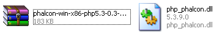

СодержаниеПредыдущий разделСледующий разделНа этой странице |
Установка на XAMPP¶XAMPP представляет собой лёгкий вариант установки Apache в комплекте с MySQL, PHP и Perl. Просто скачав XAMPP его сразу можно использовать. Ниже представлена детальная инструкция по установке Phalcon на XAMPP для Windows. Крайне рекомендуем использовать последние версии XAMPP. Скачайте правильную версию Phalcon¶XAMPP всегда выпускается с 32 разрядными версиями Apache и PHP. Вам необходимо так же скачивать x86 версию Phalcon для Windows в разделе скачиваний. После скачивания библиотеки Phalcon у вас будет zip файл, примерно такой, как показано ниже: 
Распакуйте архив и получите файл библиотеки Phalcon DLL:

Скопируйте файл php_phalcon.dll в каталог PHP расширений. Если вы установили XAMPP в каталог c:\xampp, то расширения будут в c:\xampp\php\ext 
Отредактируйте ваш файл php.ini, он располагается в C:\xampp\php\php.ini. Для редактирования можно использовать Блокнот или любую подобную программу. Мы рекомендуем использовать Notepad++ для избегания проблем с окончание и переводом строк. Добавьте в конец файла: extension=php_phalcon.dll и сохраните его. 
Перезапустите сервер Apache из контрольной панели XAMPP. PHP должен загрузиться с новой конфигурацией. 
Откройте ваш браузер и перейдите на http://localhost. Должна появиться страница приветствия XAMPP. Нажмите на ссылку phpinfo(). 
phpinfo() выводит обширную информацию о текущем состоянии PHP. Прокрутите страницу ниже и убедитесь что расширение phalcon загружено корректно. 
Если вы увидели версию phalcon в выдаче phpinfo(), поздравляем!, вы готовы к полёту с Phalcon. Скринкаст¶Нижеприведённый скринкаст отображает пошаговую установку Phalcon на Windows: Дополнительные руководства¶ |